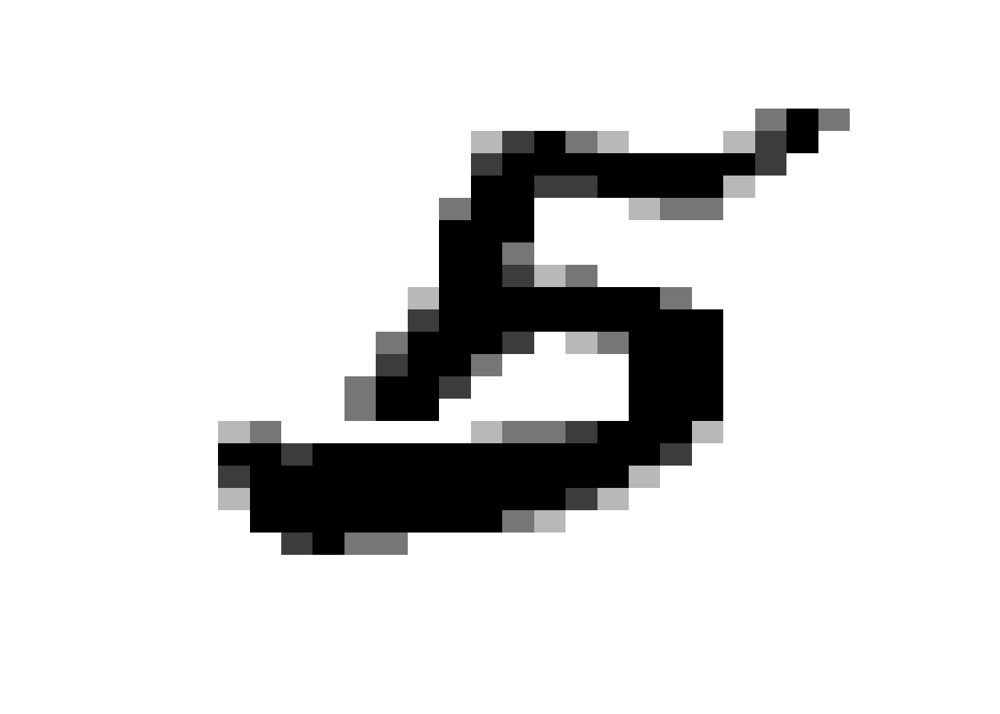
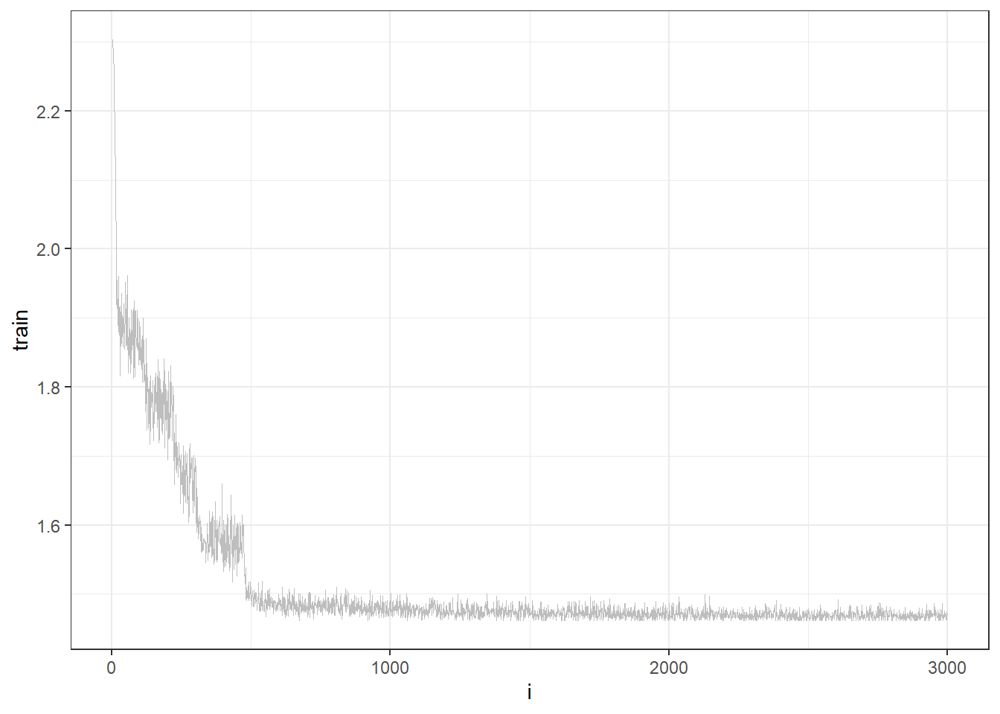
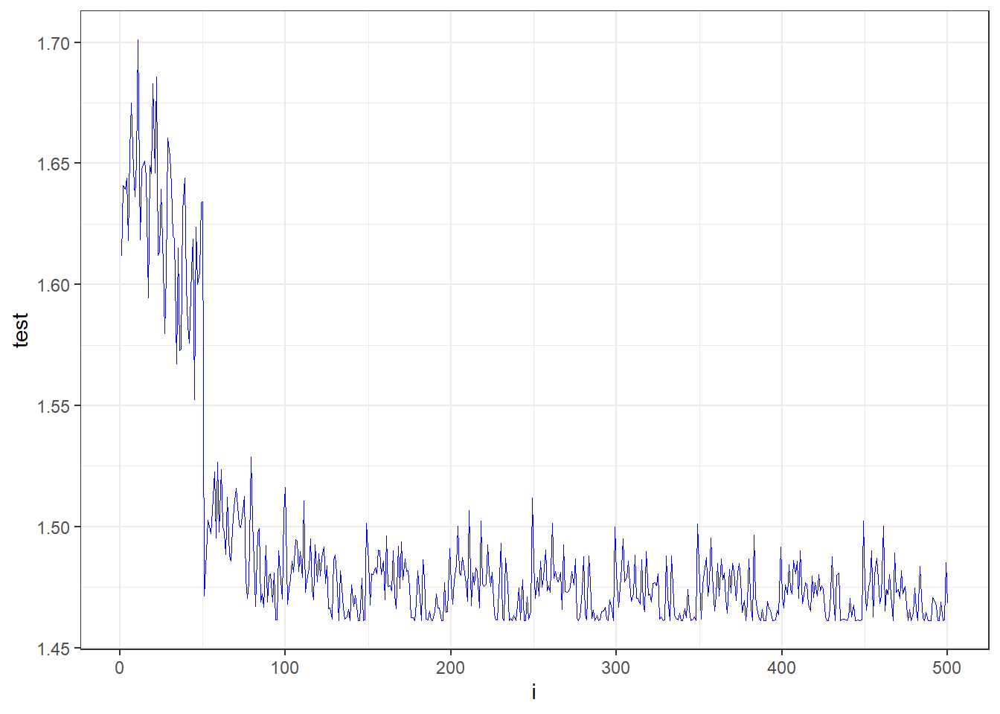

library(torch)
library(torchvision)
library(caret)
library(tidyverse)
library(reshape2) # melt functionThis post is about using convolutional neural network to recognize hand-written digits, MNIST data set. The following contents were adapted based on this and this pages.
Data
Data were downloaded using the following command: torchvision::mnist_dataset(".", download=T).
train = readRDS("training.rds")
test = readRDS("test.rds")
# train[[1]] indicate numeric values for the image and train[[2]] indicate the correct number
dim(train[[1]])[1] 60000 28 28dim(test[[1]])[1] 10000 28 28n_train <- 60000
n_test <- 10000Plot the image
train[[2]][40000][1] 5image <- train[[1]][40000, 1:28, 1:28]
image_df <- melt(image)
ggplot(image_df, aes(x=Var2, y=-Var1, fill=value))+ # reorient the image
geom_tile(show.legend = FALSE) +
xlab("") + ylab("") +
scale_fill_gradient(low="white", high="black")+
theme(axis.line=element_blank(),
axis.text.x=element_blank(),
axis.text.y=element_blank(),
axis.ticks=element_blank(),
axis.title.x=element_blank(),
axis.title.y=element_blank(),
legend.position="none",
panel.background=element_blank(),
panel.border=element_blank(),
panel.grid.major=element_blank(),
panel.grid.minor=element_blank(),
plot.background=element_blank())
train[[2]][40000][1] 5Convert data to tensor type
device = "gpu"
x_train =
train[[1]] %>%
torch_tensor(device = device, dtype = torch_float32()) %>%
torch_reshape(list(n_train, 1, 28, 28))
x_train = x_train$divide(255) # normalize
y_train =
train[[2]] %>%
factor(levels = c(0:9)) %>%
torch_tensor(device = device, dtype = torch_int64())
x_test =
test[[1]] %>%
torch_tensor(device = device, dtype = torch_float32()) %>%
torch_reshape(list(n_test, 1, 28, 28))
x_test = x_test$divide(255)
y_test =
test[[2]] %>%
factor(levels = c(0:9)) %>%
torch_tensor(device = device, dtype = torch_int64())dataloader
batch.size <- 200
train_loader =
dataloader(
tensor_dataset(x_train, y_train),
batch_size = batch.size,
shuffle = T)
test_loader =
dataloader(
tensor_dataset(x_test, y_test),
batch_size = batch.size)Network
network = nn_module(
classname = "cnn.model",
initialize = function(){
self$cv1 = nn_conv2d(in_channels = 1,
out_channels = 32,
kernel_size = 5,
padding = 2)
self$cv2 = nn_conv2d(in_channels = 32,
out_channels = 64,
kernel_size = 5,
padding = 2)
self$pool = nn_max_pool2d(kernel_size = 2,
stride = 2)
self$fc1 = nn_linear(64*7*7, 100)
self$fc2 = nn_linear(100, 10)
},
forward = function(M){
M %>% # [batch.size, 1, 28, 28]
self$cv1() %>% # [batch.size, 32, 28, 28]
nnf_relu() %>%
self$pool() %>% # [batch.size, 32, 14, 14]
self$cv2() %>% # [batch.size, 64, 14, 14]
nnf_relu() %>%
self$pool() %>% # [batch.size, 64, 7, 7]
torch_flatten(start_dim = 2) %>%
self$fc1() %>%
nnf_relu() %>%
self$fc2() %>%
nnf_softmax(2)
}
)Set the seed, loss function, and the optimizer
set.seed(1234)
model = network()
model$to(device = device)
loss.func = nn_cross_entropy_loss()
optimizer = optim_adam(model$parameters, lr=0.001)Train the network
epoch = 10
train_loss = vector()
test_loss = vector()
for (i in 1:epoch) {
for (b in enumerate(train_loader)){
optimizer$zero_grad()
output = model$forward(b[[1]])
loss = loss.func(output, b[[2]])
loss$backward()
optimizer$step()
train_loss = c(train_loss, loss$item())
}
for (b in enumerate(test_loader)) {
model$eval()
output = model$forward(b[[1]])
loss = loss.func(output, b[[2]])
test_loss = c(test_loss, loss$item())
model$train()
}
}Plot the loss
tibble(i = seq(1, length(train_loss)), train = train_loss) %>%
ggplot()+
geom_line(aes(i, train), color="gray", size=0.1)+
theme_bw()
tibble(i = seq(1, length(test_loss)), test = test_loss) %>%
ggplot()+
geom_line(aes(i, test), color="blue", size=0.1)+
theme_bw()
Accuracy
pred = vector()
for (b in enumerate(test_loader)) {
output =
model$forward(b[[1]]) %>%
torch_max(2) %>%
.[[2]]
pred = c(pred, output$to(device = device) %>% as_array())
}
tibble(
label = y_test$to(device = device) %>% as_array() %>% as.factor(),
pred = pred %>% as.factor()) %>%
with(., caret::confusionMatrix(pred, label))Confusion Matrix and Statistics
Reference
Prediction 1 2 3 4 5 6 7 8 9 10
1 972 0 0 0 0 1 6 0 3 0
2 0 1127 0 0 0 0 2 2 0 0
3 2 2 1029 5 0 1 2 2 1 0
4 0 1 1 993 0 5 1 1 0 0
5 0 0 0 0 971 0 3 1 0 1
6 0 0 0 3 0 880 1 0 0 1
7 1 1 0 0 0 1 937 0 0 0
8 1 0 1 1 0 0 0 1005 0 0
9 1 4 1 1 1 0 6 1 962 0
10 3 0 0 7 10 4 0 16 8 1007
Overall Statistics
Accuracy : 0.9883
95% CI : (0.986, 0.9903)
No Information Rate : 0.1135
P-Value [Acc > NIR] : < 2.2e-16
Kappa : 0.987
Mcnemar's Test P-Value : NA
Statistics by Class:
Class: 1 Class: 2 Class: 3 Class: 4 Class: 5 Class: 6
Sensitivity 0.9918 0.9930 0.9971 0.9832 0.9888 0.9865
Specificity 0.9989 0.9995 0.9983 0.9990 0.9994 0.9995
Pos Pred Value 0.9898 0.9965 0.9856 0.9910 0.9949 0.9944
Neg Pred Value 0.9991 0.9991 0.9997 0.9981 0.9988 0.9987
Prevalence 0.0980 0.1135 0.1032 0.1010 0.0982 0.0892
Detection Rate 0.0972 0.1127 0.1029 0.0993 0.0971 0.0880
Detection Prevalence 0.0982 0.1131 0.1044 0.1002 0.0976 0.0885
Balanced Accuracy 0.9954 0.9963 0.9977 0.9911 0.9941 0.9930
Class: 7 Class: 8 Class: 9 Class: 10
Sensitivity 0.9781 0.9776 0.9877 0.9980
Specificity 0.9997 0.9997 0.9983 0.9947
Pos Pred Value 0.9968 0.9970 0.9846 0.9545
Neg Pred Value 0.9977 0.9974 0.9987 0.9998
Prevalence 0.0958 0.1028 0.0974 0.1009
Detection Rate 0.0937 0.1005 0.0962 0.1007
Detection Prevalence 0.0940 0.1008 0.0977 0.1055
Balanced Accuracy 0.9889 0.9886 0.9930 0.9963